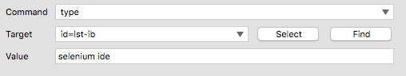
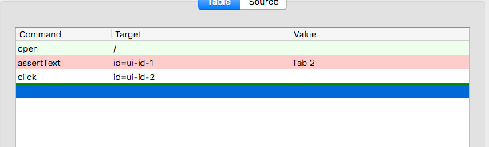

Selenium 指令
命令組成

- 指令 (Command)：行為 / 事件
- 目標 (Target)：選取元素
- 值 (Value)
指令的種類
- 操作（Actions）
- 存取（Accessors）
- 驗證（Assertions）
操作（Actions）
open：前往某個頁面

| 命令 (Command) | 目標 (Target) | 值 (Value) |
|---|---|---|
| open | /test | |
| open | http://demoqa.com |
click：模擬點擊一下
| 命令 (Command) | 目標 (Target) | 值 (Value) |
|---|---|---|
| click | myCheckbox | |
| clickAndWait | mySubmitButton | |
| clickAndWait | myLike |
type：模擬鍵盤輸入
| 命令 (Command) | 目標 (Target) | 值 (Value) |
|---|---|---|
| type | myField | Hi |
| typeAndWait | myField | Hi |
select：模擬選取
| 命令 (Command) | 目標 (Target) | 值 (Value) |
|---|---|---|
| select | id=entry_1000004 | label=Firefox |
| select | dropDown | index=0 |
| select | dropDown | value=AUD |
| selectAndWait | dropDown | index=0 |
| selectAndWait | dropDown | value=AUD |
pause
- 暫停
- 單位是毫秒
| 命令 (Command) | 目標 (Target) | 值 (Value) |
|---|---|---|
| pause | 5000 |
存取（Accessors）
storeTitle store
| 命令 (Command) | 目標 (Target) | 值 (Value) |
|---|---|---|
| store | alincode@gmail.com | myEmail |
| 命令 (Command) | 目標 (Target) | 值 (Value) |
|---|---|---|
| type | id=email | ${myEmail} |
storeText
練習題

驗證（Assertions）
- 驗證（assert）
- assertText
- assertTitle
- assertAlert
- 辨識（verify）
- verifyText
- verifyTitle
- verifyTextPresent
- verifyElementPresent
- verifyTable
- 等待（waitFor）
- waitForText
- waitForPageToLoad
- waitForElementPresent
驗證（assert）vs 辨識（verify）

差別在於處理錯誤的方式
- 驗證（assert）發生錯誤時，測試將會終止。
- 辨識（verify）：發生錯誤時，只是將錯誤訊息留下記錄，測試將會繼續執行不會中斷。
- 使用情境：不影響整體測試流程的小細節
verifyText
- 驗證文字
| 命令 (Command) | 目標 (Target) | 值 (Value) |
|---|---|---|
| verifyText | xpath=/html/body/div[2]/div/p | 驗證的文字 |
| verifyText | //html/body/div[2]/div/p | 驗證的文字 |
verifyAllWindowTitles
- 驗證視窗標題
| 命令 (Command) | 目標 (Target) | 值 (Value) |
|---|---|---|
| verifyAllWindowTitles |
等待（waitFor）
等待某些情況發生時才生效，常用於非同步 (AJAX)。
waitForAllWindowTitle
- 等待視窗指定標題出現
| 命令 (Command) | 目標 (Target) | 值 (Value) |
|---|---|---|
| waitForAllWindowTitle | 您的標題 |